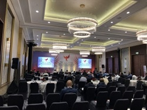

- 2021-09-12
-
5月22日にP講習報告会をハイブリッド形式で開催し、現地で学部3年生(現学部4年生)が発表しました。
情報セキュリティ研究室では、研究室配属された学部3年生を対象にした「P講習」という研究室活動を後期(11月～)に実施しています。 P講習は、卒業研究を見越したプログラミングスキルの向上や研究室内でのコミュニケーション円滑化を目的とした学生主体の取り組みで、最終的にグループに分かれアプリケーション作成を行います。 毎年研究室の学部4年生(現修士1年生)が企画しており、今年度は学部3年生を3班に分け「Webアプリケーションを制作し、そこで行ったセキュリティ対策の発表」というテーマで取り組んでもらいました。
22日の成果発表会では現研究室メンバーだけでなくOBも参加し、質疑応答では技術的な話題から社会人生活の話題まで幅広い分野の話を聞くことができ、楽しい雰囲気の報告会となりました。
- 2021-09-07
-
[概要]
A班では、SNSの基本的な機能を備えた、画像を投稿できるWebアプリを作成しました。
これを作成しようと思ったのは、日ごろ、SNSのデータが流出したとニュースで聞く機会が多く、
SNSアプリであれば、制作する過程でセキュリティ対策のしがいがあると考えたからです。[アプリについて]
サイトを利用するユーザーはまず会員登録をし、アカウントを作成します。
アカウントを作成したら、「新しいポストを投稿」ボタンから、画像とテキストを投稿することができます。
投稿された画像は、ホームに掲載されます。また、他のユーザーの投稿に返信をしてコミュニケーションを取ることもできます。[開発について]
WebフレームワークのDjangoを使用し開発を進めました。
Djangoには、パスワード不正取得対策、パスワード漏洩対策、セッション管理などのセキュリティ機能がデフォルトで備わっており、安全なWebアプリケーションを構築することが出来ます。
また、外部の拡張機能を用いてアカウントロック機能を実装し、不正なログイン試行の対策をしました。[感想]
今回は3人でのグループ開発でしたが、各々チームで何かを作る経験があまりなかったので、良い経験になったと思います。 特に進捗管理の方法やオンラインでのコミュニケーションの取り方を学べたのは有意義だったと感じました。 今後の研究やアプリケーション開発に活かしていきたいです。[リンク]
アプリURL: https://psemi2021appa.herokuapp.com/
GitHub: https://github.com/n3xem/psemi2021-app - 2021-09-07
-
[概要]
B班では、複数の動画サイトの動画をまとめて検索ができるアプリケーションを作成しました。
身近な動画サービスを題材に、検索フォームやAPIを利用することでそれらに対するセキュリティ機能を加えたアプリケーションになっています。[アプリについて]
検索したいキーワードをフォームに入力すると、ニコニコ動画・Youtubeの動画とその情報をそれぞれ20件抽出して表示します。 また、それらを「再生数，再生時間，投稿日時」それぞれを基準に昇順・降順に並べ替えることができます。[セキュリティ機能]
Flaskフレームワークを利用し、Jinja2テンプレートエンジンを利用することでエスケープ処理を行いXSS対策、SQLAlchemyモジュールを利用することでSQLインジェクション対策などを行っています。[感想]
新型コロナウイルスの影響で、オンラインによるコミュニケーションが大変でしたが、タスクの振り分けやスケジュール管理などチーム開発をする貴重な経験ができたと思います。
また、開発者の目線からセキュリティを考える良い機会になったと感じます。[リンク]
アプリURL: https://mighty-savannah-89346.herokuapp.com/
GitHub: https://github.com/18fi552-takumi-matsumoto/psemi_b - 2021-09-07
-
[概要]
C班では、注文履歴を確認できるようなWebアプリを作成しました。
身近でよく使われるような機能ですが、セキュリティに配慮して実装を進めることで、改めで守る側の苦労を知ることができました。[アプリについて]
このアプリでは２つの画面で構成されています。
１つ目はログイン画面であり、ユーザ名やパスワードでログインできます。
２つ目の画面では、ユーザ情報や注文履歴が表示されます。
また、クライアントからWebサーバにリクエストが来ると、APIサーバ経由でデータベースにアクセスするようになっています。[セキュリティ機能]
３つのセキュリティ対策を実装しています。
まず１つ目は通信経路の保護です。ブラウザとWebアプリサーバ間の通信ではSSL化されていて、WebアプリサーバとAPIサーバ間では、アクセス元やポート限定することで、安全な通信をできるようにしています。
２つ目はユーザ認証への対策です。ブラウザでのログイン状態を保持するために、Sessionを利用して状態を保存しています。また、アクセストークンを用いることで、不正なユーザからのアクセスを拒否するようにしました。
最後の対策はSQLインジェクションへの対策です。IPAが公表している解決策に従って、ORMを利用して実装しました。[感想]
新完全オンラインのため、各メンバーの進捗管理がとても難しく、コミュニケーションも不十分で、フロントエンドとバックエンドのソースコードの結合作業が大変でした。
制作において、たくさん調査を行い、セキュリティについて良い勉強になりました。今回の経験を今後も生かして、セキュリティを意識した実装をしていきたいと思います。 - 2021-04-02
-
2021年3月20日に第83回情報処理学会全国大会のイベントとして開催された第13回情報システム教育コンテスト（ISECON2020）にて， 東京電機大学が2015年度から開講している社会人向けサイバーセキュリティ講座CySecの一科目である「セキュアシステム設計・開発」の取組を発表し，審査の結果，優秀賞を受賞しました．
「セキュアシステム設計・開発」では，システム開発プロセスのVモデルに従って， その各段階におけるセキュリティ対策を要件定義，設計，実装，テストと一連の流れに沿って，実践的に学修することで， セキュリティ・バイ・デザインによるセキュアなシステム設計および開発ができるようにすることを目標としています．
なお，柿崎はISECON2017において，未来科学部情報メディア学科開講科目である「サーバプログラミング演習」の取組を発表し，優秀賞を受賞しています．
ISECON2020 審査結果
- 2021-04-02
-
2月18日、卒業論文発表会がZoom上にて開催されました。コロナ禍の影響でZoom上での開催になりましたが、 情報セキュリティ研究室では無理のない範囲で大学に行ける学生のみ研究室に集まり、コロナウィルス対策を行ったうえで大学からの発表を行いました。
卒業論文発表は、先端情報システム研究室、暗号方式・暗号プロトコル研究室との3研究室合同で行われました。 発表12分、質疑応答3分という限られた時間の中で、情報セキュリティ研究室からは学部4年生9人による研究成果について発表しました。
以降、卒業研究発表会のコメントを紹介します。
[三田] 卒業論文発表会では大学からの現地参加で発表を行いました。久々のオフラインでの発表であるため緊張してしまい、質疑応答で十分に説明できなかった部分など反省点はありましたが、自分の研究成果をしっかり発表できて良い発表になったと思います。また、他研究室との合同発表であるため、自分の発表と比べられる良い機会になりました。
[二瓶] 卒業研究発表会にはオンラインで参加しました。研究室内で一年半の間繰り返し発表の機会を設けていただいたので以前よりも発表がスムーズになったと思いますが、質問の意味をうまく理解できないことがあるという課題は今後改善していきたいです。研究室合同のため、お互いに研究の集大成を他分野の学生へ説明する良い機会になりました。
[堀井] 卒業研究発表会にはオンラインで参加しました。専攻が異なる学生や先生の方々にも自身の研究内容について理解しやすいよう心がけながら発表しました。また、他学科の学生の研究内容や発表の手法など、他分野の知見や今後の自身の発表の参考になる機会にもなりました。
[大林] 卒業研究発表会はオンラインで参加しました。オフラインとはまた違った空気感の中での発表には、少し慣れ発表はうまくいったと感じています。質疑応答では想定外の質問への対応にすこし戸惑ってしまったため、どのような質問がきても対応できるよう修士に生かしたいと思います。自分の発表の欠点が見つかりいい経験になりました。
[岡安] 卒業研究発表会はオンラインで参加しました。研究分野の違う他研究室の人たちへ分かりやすく説明することの大変さを感じました。また、研究分野の違う研究室と合同で行うことで新たな知見を得られるいい機会となりました。
[吉田] 卒業研究発表会は、大学での発表でした。オンラインからではなくオフラインでの発表であったので緊張しましたが、練習通りに発表が出来ました。今回の発表は、研究内容を他分野の方に説明する貴重な機会でもあり、とてもよい経験になりました。
- 2021-04-02
-
2月13日、修士論文研究成果発表会がZoom上で開催されました。今年は、新型コロナウイルスの影響でZoom上の開催となりましたが、人前で発表する貴重な機会であるため、 情報セキュリティ研究室では各自無理をしない範囲で大学に行ける学生のみ研究室に集まり、コロナウイルス対策を行ったうえで発表に臨みました.
発表会は、実空間コンピューティング研究室、音メディア研究室と３研究室合同で行われ、 情報セキュリティ研究室からは修士2年の5名が各自これまでに行ってきた研究成果を1人15分の持ち時間で発表しました。
以降、成果発表会の発表順に、コメントを紹介します。
[飯田] 一年通してオンラインの授業・発表だったため，現地に行って直接聴講者の反応を確認することができる環境下での発表は難しいことを改めて実感しました。限られた発表時間で聴講者側に沿った資料作りを今後も意識する必要があることを感じた発表会でした。
[板倉] 二年間の研究成果を発表する重要な場であるため、発表の序盤は緊張しており自分の説明が伝わっているか不安に感じながらの発表でしたが、時間が経つにつれて緊張は消えて無事に発表を終えられました。本番では発表時間に少し余裕が生まれていたので、研究内容に関する補足説明を臨機応変に加えられていたら尚良い発表になったと思います。
[本丸] 発表に向けて練習をしていましたが、久しぶりの対面での発表ということもあり緊張で練習通りの発表をすることが難しく改めて発表の難しさを感じました。発表では専門でない人に向けて内容を伝える必要があり、研究のうち重要なポイントに絞るなどの工夫を行いました。
[山下] 成果物発表会自体はオンラインで開催されましたが、情報セキュリティ研究室は集まって対面での発表となりました。コロナウイルスの影響もありオンラインでの発表が多かった中、久しぶりの対面での発表で緊張によりぎこちない発表となりましたが、やはり聞き手の反応が見れたことはとても良かったと感じました。発表では、画像や表で研究成果をわかりやすく伝えられたと思います。
[吉岡] オンラインでの参加でしたが、1年間を通してオンラインで話す機会があったことで特に問題なく発表できました。また発表では研究を活用する場面について質問があり、他分野の方に研究概要をイメージしてもらうには具体的な活用場面を提示するなど詳しく説明するだけではないと改めて実感しました。
- 2021-03-19
-
2月25日(木)、信組情報サービスの米谷達哉氏らに、Zoom上の情報セキュリティ研究室に来訪して頂き、金融分野の動向として「信用組合を取り巻く現状と今後の展望」、社会人生活ならびに学生のときに学ぶべきこととして「社会人としての心構え」などについて、お話しを伺いました。
「信用組合を取り巻く現状と今後の展望」では、信用組合の役割や変遷だけではなく、新型コロナウイルス感染症の影響や金融機関の役割など、技術系大学では普段あまり触れることの話題に触れることができ、「社会人としての心構え」では、8つの心構えを紹介して頂きました。 質疑応答では、普段の社会人生活だけではなく入社した頃の話や金融分野で発生しているサイバー犯罪など多岐に渡り、1時間半ほどの研究室来訪は、あっという間に終わってしまいました。学生との交流にお付き合い頂いた信組情報サービスの皆さまに感謝いたします。
情報セキュリティ研究室では、授業の一環として、研究室の学生が学外の方との交流を通していろいろな分野を知る、質疑応答などを通してコミュニケーションの大切さを知るなどに取り組んでいます。ぜひ、オンライン、コロナ禍が収束/終息したときにはオフラインでの研究室来訪をお待ちしております。
信組情報サービス(株)
- 2021-02-21
-
情報処理学会論文誌 Vol.61 No.12 PP.1792～1801 (Dec. 2020)
タイトル
APIグループ間の相関性とフォルダ操作頻度に基づくマルウェア分類手法の提案概要
マルウェア攻撃手法の進歩に伴い、既存のマルウェア検知および分類手法では対応が難しくなってきている。 本論文ではマルウェアの動作パターンと特徴ある動作とを特徴量とする機械学習による分類手法を提案する。 本提案方式では、動作パターンとしてAPIグループ間の相関性、特徴ある動作としてフォルダ操作頻度を使用する。 さらに、研究用データセットFFRI Dataset2016を使用した分類実験を通して有効性を評価する。 分類実験の結果、不均衡データであることを考慮したオーバーサンプリングの場合、ベンダーが提供するマルウェア系列との一致度は99%となり、 動作を特徴付けるAPIとフォルダ操作頻度に着目した機械学習による分類手法が有効であることを示した。 今後は、検体数を増やして不均衡データが分類に対する影響を抑えると共に、 様々な特徴量を使用して分類精度を向上させ、未知のマルウェア分類を対応できるように取り組んでいく。著者からのひとこと
掲載された論文は、自分の初めての学術論文であり、執筆から掲載までの過程は貴重な経験になりました。 論文は国際会議で発表した内容を発展させて作成したのですが、投稿はより大変でした。 まず原稿を作成した時、例えば文章構成などの経験が浅いため、書き方には非常に多くの問題がありましたが、先生のアドバイスもあり、どうにか完成しました。 その後、条件付き採録され、査読回答書を作成した際には、論文の新規性や有用性、既存研究との比較および多くの説明不足を指摘されました。 今回の論文投稿では、論文の作成と修正する際に先生とのコミュニケーション、内容の読みやすさ、抽象的な内容の具体的な説明などが非常に重要であることが理解できました。 今後は、この経験を研究室のみんなの論文作成に少しでも役に立てたいと思います。
今回の投稿に際してお力添えを頂いた皆様、誠にありがとうございました。今後とも、研究の進捗をより一層頑張ります。 - 2020-12-17
-
12月9日(水)、2020年後期授業「クラウドコンピューティング」において、外部講師としてお招きした(一社)日本クラウドセキュリティアライアンス／ネットワンシステムズ(株)の片岡武義(かたおかたけよし)氏によるリモート講義「ネットワーク仮想化」を実施しました。 講義では、ネットワーク機能をソフトウェアで再定義するSDN：Software Defined Network、ネットワーク要素を仮想化インフラで再定義するNFV：Network Functions Virtualizationなどを取り上げました。理解を深めるため、トピックが終わる度に、簡単な確認テストを実施しました。
(一社)日本クラウドセキュリティアライアンス
ネットワンシステムズ(株)
- 2020-12-17
-
12月2日(水)、2020年後期授業「クラウドコンピューティング」において、外部講師としてお招きした(一社)日本クラウドセキュリティアライアンス／マクニカソリューションズ(株)の野原峰彦(のはらみねひこ)氏によるリモート講義「コンテナ型仮想化」を実施しました。 講義は、前半がコンテナの歴史と技術概要や利用事例の紹介です。後半はコンテナ技術のひとつであるDockerを使って、アプリケーションの配備やDockerイメージの作成のデモ紹介を通して、コンテナ型仮想化を体験しました。
(一社)日本クラウドセキュリティアライアンス
マクニカソリューションズ(株)
- 2020-12-17
-
11月25日(水)、2020年後期授業「クラウドコンピューティング」において、外部講師としてお招きした(一社)日本クラウドセキュリティアライアンス／(株)日立製作所の甲斐賢(かいさとし)氏によるリモート講義「サーバ仮想化」を実施しました。 講義では、クラウドにおけるサーバ管理について、誰がクラウドのサーバを管理するか、どのようにサーバを管理するかという視点から解説した後、管理対象であるサーバの「望ましくない状態」についてグループ討議しました。
(一社)日本クラウドセキュリティアライアンス
(株)日立製作所
- 2020-12-02
-
10月30日、自身の研究活動をまとめ、発表12分、質疑応答3分という限られた時間のなかで、自身の研究について人前で発表することを目的とした、学部4年生9人による卒業研究の中間報告会を開催しました。
以降、中間報告の発表順に、コメントを紹介します。
[岡安] 自分の発表に関して、対面しているにも関わらずプロジェクターを見ながらの説明をしていた場面があり、聴講者に背を向けて発表していることがみられたので、次回は聴講者の方を向いて発表することを心がけたいです。
[堀井] まず初めに、約9か月ぶりに研究室のメンバー達と対面で話せることが出来、久々に全体で研究室らしい活動が出来て嬉しかったです。自分の発表についてですが、説明に拙い部分もあり、質疑応答についても適切な回答が出来なかったところがありましたので、改善して次に繋げようと思います。
[瀬良垣] 久しぶりの学校への参加で、去年までの感覚を取り戻すのが多少時間がかかってしまいました。元々喋りが得意な方ではないが、長いオンライン授業生活により、いつも以上に喋りが拙くはっきり発言できなかったことが心残りです。次の発表では十分に練習し、自分の意見をはっきり表現できるように頑張りたいです。
[吉田] オフラインでの発表は久しぶりだったので緊張しました。聴講者の反応がオンラインでの発表よりもわかりやすかったなどの新たな発見があり、とても良い経験になりました。
[三田] オフラインにて中間発表会に参加しました。約半年ぶりに人前で発表を行ったため緊張しましたが、いつもに増して気持ちを引き締めて発表が出来る良い機会となりました。
[大林]オンラインで練習していた時より、焦ってしまったのか時間が余ってしまいました。質問にスマートに答えられなかったことや文のまとめ方が下手など反省点が多く見つかった良い機会になりました。
[浦島] オフラインとオンラインの聴講者がいるという今までにない貴重な経験が出来ました。また、様々な方から意見をいただき改善点を見つける良い機会となりました。
[二瓶] 発表や質問への受け答えはオンラインでの練習通り出来ましたが、指し示す部分をオフラインとオンラインの両方にどのように伝えるか迷う場面がありましたので、次回はどちらの聴講者に対してもより分かりやすい形にしたいです。資料については、初めは読み難い部分もありましたが先輩方のオンラインでのレビューのおかげで分かりやすくなりました。
[山口] 今回の中間発表では準備段階から発表に至るまで、思っていたよりも計画通りにいかないことがあり反省点の多いものとなりました。こうしたオンラインとオフラインが並行したプレゼンテーションの機会は社会人になっても往々にしてあると思うので、今一度気を引き締める良いきっかけになりました。
発表中はソーシャルディスタンスを確保しつつ、そして、最後の集合写真のときは、笑顔を保ちつつ、息を止めての撮影となりました。学部4年生のみなさん、お疲れ様でした。
- 2020-11-26
-
11月11日(水)、2020年後期授業「クラウドコンピューティング」において、外部講師としてお招きした(一社)日本クラウドセキュリティアライアンスの勝見勉(かつみべん)氏によるリモート講義「クラウド利用とセキュリティ」を実施しました。 講義では、クラウドに固有のセキュリティについて解説した後、「クラウド利用におけるセキュリティ課題」についてグループ討議しました。
(一社)日本クラウドセキュリティアライアンス - 2020-11-26
-
11月18日(水)、2020年後期授業「クラウドコンピューティング」において、外部講師としてお招きした(一社)日本クラウドセキュリティアライアンス／ソフォス(株)の満田淳(みつたあつし)氏によるリモート講義「クラウド提供とセキュリティ」を実施しました。 講義では、クラウドセキュリティ要件について解説した後、「クラウドサービス選定にあたっての管理項目のひとつであるアクセス制限」についてグループ討議しました。
(一社)日本クラウドセキュリティアライアンス
ソフォス(株)
- 2020-11-26
-
CSS 2020(Computer Security Symposium)併設のMWS(anti Malware engineering WorkShop)においてMWSCupに参加しました。
MWSCupは事前課題と当日課題の2部から構成されており、その総合点を競います。
事前課題では新規性、実用性、有効性および継続性を持ったセキュリティ関連ツールの開発またはデータセットの作成を、当日課題はCTF形式で、マルウェアの表層、静的、動的解析や機械学習を活用したマルウェア分類などに取り組みました。
例年オフライン開催なのですが、今年は新型コロナウイルスの影響で当初開催地の神戸ではなく、オンラインでの開催でした。 さらに、今年は研究室からの参加者は2名のみであったため、他大学、社会人と共に合同チームを3チーム編成し参加しました。 実務経験のある社会人と協力して事前課題と当日課題を進める際に、企業での標準化された開発プロセス等に関する知識や経験に触れることができ、知見を広げることができました。 また、事前課題と当日課題の分担を決める際、各メンバーの知識や経験の差を、チームとして、どのようにしてカバーしていくと良いのかなどを考える機会となりました。オンライン開催ということで、事前課題の準備および当日課題向けのチーム内の勉強会においても、オンラインツールであるZoomやSlackを活用しました。 オンラインでの勉強会は現地で集まるよりも便利なところもありますが、オンラインミーティングでは各メンバーと実際に会えず、特に合同チームの場合には、各メンバーと初めてチームワークするため顔を合わせないことがチームワークの効率などにある程度の影響を与えると思いました。 このため、Slackを使った進捗の報告、discordの音声機能を使った作業状況やトラブル等の共有を通してチームの結束を図りました。
さて、本題のMWSCupの課題の取組みについてですが、合同チーム(人海戦術＿premium)で参加した飯田は、事前課題としてBOSデータセットの整形ツールの作成に取組み、当日課題では静的解析課題に挑戦しました。 合同チーム(人海戦術INT)で参加した周は、事前課題として表層解析ツールweb-PEanalysisの改善に取組み、当日課題ではマルウェア分類と表層解析課題に挑戦しました。
BOSデータセットの整形ツール
最後に、実務に近いマルウェア解析に興味がある方はぜひMWSCupに参加してみてください！！！
https://github.com/j18195st/premiere
表層解析ツールweb-PEanalysis
https://github.com/JinkaiINT2020/web-PEanalysis
マルウェア対策研究人材育成ワークショップ 2020
https://www.iwsec.org/mws/2020/
コンピュータセキュリティシンポジウム2020（CSS2020）
https://www.iwsec.org/css/2020/
- 2020-11-05
-
10月23日(金)、学部3年生：11名が研究室に配属となりました。 この日の研究室会合は、配属後初回開催となることから、研究室見学も兼ねて、オフライン＋オンラインのハイブリッド型の研究室会合としました。 オフライン会場である情報セキュリティ研究室には、学部3年生：5名、修士：2名が参集しました。
Q：なぜ、11名ではなく5名か？ 気になりますよね。
A：学内に入構できる人数が、1日あたり、研究室あたり、10人という制約事項があるためです。
次回11月6日(金)は、研究室見学をできなかった学部3年生を対象に、オフライン＋オンラインのハイブリッド型の研究室会合を予定しています。
Zoom上のオンライン研究室会合(左)とオフライン会場(右)の様子
- 2020-11-05
-
10月15日(木)、2020年後期授業「ネットワークセキュリティおよび演習」において、オンライン授業であることを活かし、(国研)情報通信研究機構(NICT)北陸StarBED技術センターにご協力を頂き、北陸StarBED技術センターのオンライン見学を実施しました。
オンライン見学の目的は、サーバ、ネットワーク機器、ストレージなどの実物を見てもらいたい、どのような環境下で稼働しているのかを見てもらいたいというものです。 今回見学したStarBEDは、実際の使用環境に近い状況を再現可能なテスト環境です。技術センターの中には、StarBEDを構成する数百台規模のPCサーバ、それらを繋ぐためのスイッチ類、無停電電源装置が搭載されたラックが立ち並んでいます。 その光景は、Webサイトのサーバ機などのIT機器を設置・収容するデータセンターを彷彿させるものです。
オンライン見学にあたり、瀧本周平さん、井原美樹さんにご協力を頂きました。ありがとうございます。
StarBED
https://starbed.nict.go.jp/
北陸StarBED技術センターの紹介
https://www.youtube.com/watch?v=02TkjR8ZHos
- 2020-11-05
-
8月22日にzoom上でオンライン合宿を開催しました。内容は、研究室メンバーによるLT(Lightning Talk)でした。
例年は夏休みに合宿を実施していましたが、新型コロナウイルスの影響で今年は合宿を中止としました。 その代わりに、合宿で開催予定だったLT会をオンラインで行いました。研究室のメンバーがそれぞれ、趣味や気になっている技術など様々な内容についてLTを行いました。
例年通りの合宿を開催できなかったことは残念でしたが、オンラインでLT会を開催したことは、1人5分の持ち時間で伝えたいことをまとめて発表する練習の良い機会になりました。 また、今まで知らなかった知識や研究室メンバーの趣味などを知る良い機会にもなりました。
Zoom上のオンライン合宿の様子
- 2020-10-25
-
9月18日に修士2年生による修士論文の中間発表会がZoom上で開催されました。
中間発表は情報セキュリティ研究室以外に4つの研究室と合同で10時から17時の間で行われ、1人15分の持ち時間で自身の研究の概要と課題、今後の予定などについて発表しました。 発表後は5分間質疑応答があり、説明不足だった部分に気づけたりアドバイスをいただけたりするので研究をすすめる上で参考になりました。また、他の研究室の発表と自身の発表と比べることができる良い機会となりました。
- 2020-07-28
-
A班では、情報機器を日常的に使っている一般の方が身近に感じられるような、無線LANを用いたフィッシング体験と、メールを用いたランサムウェア体験を作成しました。
無線LANを用いた体験では、フリーWi-Fiに見せかけた体験用Wi-Fiスポットに接続するとSNSログイン画面が表示され、そこからフィッシング体験コースが始まります。 体験用Wi-Fiスポット、SNSサイトなど、デモで使用するすべてのサーバをRaspberry Pi 単体で動作するように作成しました。
多くのLinuxマシンで動作します: https://github.com/y9k8i/fake-captive-portal-tokyo
デモページも作成しました: https://y9k8i.github.io/fake-captive-portal-tokyo/
メールを用いた体験では、メールに添付されたファイルを開くとランサムウェア（身代金要求型不正プログラム）が活動を開始し、感染したことを疑似体験できます。 また、メールに書かれた本文中のリンクを開くと偽のサイトに誘導されてしまうという疑似体験も用意しました。
P講習報告会では、用意したデモ端末を用いて、無線LANを用いたフィッシング体験と、メールを用いたランサムウェア体験を紹介しました。 - 2020-07-28
-
[概要]
B班では、スマホを持つ小学生や中学生、セキュリティは「ちょっと」という方を対象にセキュリティクイズのwebアプリケーションを作成しました。
https://p-semi2020.web.app
[背景]
小学生や中学生がスマホを持つのが当たり前になり、生まれた時からスマホなどの電子機器に囲まれている「デジタルネイティブ世代」と呼ばれるまでになりました。 ですが、そのような人の多くが必ずしもセキュリティやネットモラルの認識を持ってスマホを使用しているとは限らず、スマホトラブルに巻き込まれてしまう可能性もあります。 そこで、スマホトラブルに巻き込まれないようにセキュリティの知識を楽しくつけることができるクイズアプリを作成しようと思いました。
[アプリについて]
スマホで操作しやすいUIにし、ブラウザ上からインストールすることを可能としました。 問題は「web,ネットリテラシー,SNS,モラル,トラブル管理」の種類に分類された全10問の問題を選定しました。 回答後、結果が視覚的にわかりやすい五角形のレーダーチャートにし、その結果をfacebook,twitterで投稿することができます。
- 2020-07-28
-
C班では、セキュリティに興味がない人にも興味を持ってもらえるように、比較的身近なフィッシング詐欺を題材としたアプリケーションを作成しました。 この題材を扱うに至った経緯は、メールを用いたフィッシング詐欺を体験した班員がおり、身近にある危険だと考えたからです。
メールのほかにも広告を用いたフィッシング詐欺などもあり、このようなフィッシング詐欺を体験できるアプリケーションを作成しました。
https://github.com/y0sh1da/psemi2020_C_final
今回は、あまり経験したことがないオンラインでの進捗確認でしたが、バランスよくタスクを振り分けて計画していた通りに作品を作ることができました。 またグループでアプリケーションを作成する機会はあまりなかったので、様々なことを学ぶことができたと思います。
- 2020-07-24
-
4/29~5/24に行われたML Study Jams Vol.4 に参加しました。
ML Study JamsはGoogleが主催するクラウド上で機械学習を学ぶことができる無償の教育プログラムです。 初級から上級までの様々なコンテンツが用意されており機械学習経験者はクラウドでの機械学習の流れを学ぶために、機械学習未経験者は機械学習を学ぶために利用できます。 プログラムはクエストと呼ばれる細かなコンテンツに分かれておりTensorflowを用いた予測やAIチャットボットの作成などがありました。
わからない箇所があればSlackなどのコミュニケーションツールですぐに質問することができ、プログラムもクエストを進めていくという形式になっていたため、楽しく参加することができました。 一定のクエスト数をクリアするなどの規定の条件を満たせばプレゼントももらえるため機会があれば是非参加してみてはいかがでしょうか？ - 2020-06-30
-
MWSのプレミーティングがzoom上で開催されました。プレミーティングは以下の三部構成で行われました。
1.各会社が提供しているデータセットに関する説明
2.学会の開催方法の検討(「オンライン開催にするか現地開催にするか」など)
3.グループディスカッション (議題:コロナ禍の今・その後のICT環境)
グループディスカッション内では 「個人としては、テレワーク等の移行は困らなかった」といった意見が多く見られる一方で、 「ネット環境に不慣れな人」へのフォローが必要になっているといった意見もありました。 - 2020-06-30
-
5月30日にP講習発表会をオンラインで開催しました。
情報セキュリティ研究室では、研究室配属された3年生を対象として「P講習」というものを実施しています。P講習は、卒業研究を見越したプログラミングスキルの向上や研究室内でのコミュニケーション円滑化を目的とした学生主体の取り組みで、最終的にグループに分かれアプリケーション作成を行います。 毎年研究室の大学院1年生が企画しており、今年度は3年生を3名ずつ3班に分け「セキュリティに対して興味を持ってもらえる・危機感を感じてもらえるようなもの」というテーマでアプリケーション作成に取り組んでもらいました。
30日の成果発表会では現研究室メンバーだけでなくOBも参加し、技術的な話題から作成中の苦労話までバラエティに富んだ楽しい雰囲気の発表会となりました。 - 2020-05-02
-
東京電機大学は、日本の大学として初めて「Zoom」を全学導入した、という大学とのことなのです。そして、5月7日から、その「Zoom」を利用したオンライン授業が本格的に始まります。 その一方で、セキュリティの懸念事項なども指摘されていることから、情報セキュリティ研究室では、改めて「Zoomを用いたオンライン授業/オンライン会合を安全に進めるために」を自分たちでも確認することとし、資料としてまとめました。
Zoomを用いたオンライン授業/オンライン会合を安全に進めるために
それだけですと、後発組として貢献度も低いので、セキュリティとは直接関係ありませんが、代表的なオンライン会合ツールのスケジューリング機能についても、 参考情報として比較表にまとめてみました。資料をまとめるにあたりましては、関係各位の掲載情報を参照させて頂きました。 誤字脱字なども含め、記載事項に誤りがあれば、ご連絡ください。 - 2020-04-13
-
キャンパス入構禁止により、これまでのF2Fを中心とした研究室会合だけでは研究室としての活動を回せなくなってきている状況です。研究室活動も、変換点にあるのかもしれません。
4月3日、年度が変わって初の研究室全体会合では、Zoomを使ったオンライン会合を開催しました。せっかくの機会ですので、オンライン研究室会合を進めるにあたっての留意事項をチェックリストとしてまとめました。
- Zoomのソフトウェアや仕様のセキュリティ上の問題点への対応
- 最新版にアップデートしたZoomで参加すること
最新版にアップデートしたZoomを使用することは、参加にあたっての基本です。
- 最新版にアップデートしたZoomで参加すること
- Zoomを安全に使うためへの対応
- ミーティングURLは公の場に開示しないこと
ミーティングURLが知られると、 Zoomに限らず、知らない人がオンライン研究室会合に参加できてしまう可能性を高めます。Zoomの場合、ミーティングURL(パスワードを含まない)とパスワードを別々に取り扱うことは有効です。 - ミーティングパスワードを設定すること
「ミーティングパスワードを必要とする」をオンとしてください。メールアドレスで制限する方法もありますが、オンラインだからこそ、学外の方にも参加してもらう機会が増やせるという利点は活かしたいところです。
- ミーティングURLは公の場に開示しないこと
https://dendai.zoom.us/
Zoomを用いたオンライン講義を安全に進めるために
https://apps.adm.s.u-tokyo.ac.jp/WEB_info/p/pub/5756/Zoom.pdf
- Zoomのソフトウェアや仕様のセキュリティ上の問題点への対応
- 2020-04-08
-
4月3日、年度が変わって初の研究室全体会合が行われました。現在(4月3日～4月12日)、東京電機大学では、新型コロナウイルスの感染拡大防止のため、大学へ入構を禁止しています。今回、研究室全体会合としては初めての試みで、Zoomを使ったオンラインでの会合でした。
研究活動報告と研究室内の運営に関する状況報告だけではなく、就活に関する報告もありました。
オンライン会合を導入した良かったところとして「会合のためだけに研究室に行かなくても良い」という恩恵がありました。一方、不便に感じたところとして「複数の参加者が同時発言したときの聞き取りにくさ」がありました。これに対しては、チャット機能や手を挙げる機能等を利用することで解決ができるのではないかと思います。
以上のことから、今後入構が再開されても「オンラインでの全体会合」も選択肢の一つとして活用すべきではないかと思いました。

外出自粛要請に伴う各キャンパス入構禁止について（お知らせ）
https://www.dendai.ac.jp/news/20200402-02.html
- 2020-04-08
-
第182回DPS・第88回CSEC合同研究発表会が3月12日から3月13日の二日間、開催されました。ビデオ会議システムであるZoomを利用したオンライン会議形式での開催となり、初日に聴講者として参加しました。
第182回DPS・第88回CSEC合同研究発表会
主に仮想通貨・ブロックチェーンの分野を中心に聴講し、研究の動向を掴むことができました。途中、音声や映像のトラブルも発生しましたが、各セッションの座長のタイムマネジメントにより概ね時間通りに進行しました。 聴講内容とオンライン上での質疑応答に関して様々な気づきや学びがあり、今後の研究活動に活かしたいと思います。
https://www.ipsj.or.jp/kenkyukai/event/DPS182CSEC88.html
- 2020-04-03
-
3月17日、デジ特サイバーセキュリティ小委員会が開催され、鎌田敬介氏(一般社団法人金融ISAC 専務理事/CTO)と共に出席しました。この小委員において、「脆弱性対策データベースの役割 情報共有の視点から」というタイトルで、国内の脆弱性対策データベースJVN(Japan Vulnerability Notes)の取組みを紹介しました。鎌田氏は、「我が国の金融業界における共助の仕組み」というタイトルで、金融ISACでの人材育成の取組みなどを紹介しました。
デジ特サイバーセキュリティ小委員会(小林史明小委員長)を開催。 https://go2senkyo.com/seijika/122149/posts/121195
デジタル社会推進特別委員会(略称：デジ特) https://hiratakuchan0125.hatenablog.com/entry/2019/10/07/173508
- 2020-04-03
-
3月3日～5日、米国MITREが主催するSCAP(Security Content Automation Protocol; セキュリティ設定共通化手順) V2 Workshopがメリーランド州アナポリス ジャンクションにて開催されました。
SCAPは、米国連邦政府が2006年頃から開始した脆弱性対策作業などの情報セキュリティにかかわる技術面での自動化と標準化を目指した取り組みです。SCAP V1は、プログラムの脆弱性を一意に識別するCVE(Common Vulnerabilities and Exposures；共通脆弱性識別子)、脆弱性の深刻度を評価するCVSS(Common Vulnerability Scoring System；共通脆弱性評価システム)などの識別子や評価指標の共通化の普及に大きな役割を果たしました。SCAP V2では、 エンドポイントのハードウェア/ソフトウェア資産管理、脆弱性管理、設定管理のためのアーキテクチャ、インターフェース、データモデル、プロトコルの仕様開発を進めています。
メリーランド州アナポリス ジャンクション(米国)について
アナポリス ジャンクションは、ボルチモアとワシントンDCの間くらいに位置します。 日本時間との時差はJST-13時間です。ワークショップ開催場所の近くには、国家安全保障局(NSA)、国立暗号博物館(左写真：暗号機 Enigma、 右写真：エニグマ解読用計算機 U.S.Navy Cryptanalytic Bombe)があります。


Security Content Automation Protocol Version 2 (SCAP v2)
https://csrc.nist.gov/Projects/Security-Content-Automation-Protocol-v2
National Cryptologic Museum
https://www.nsa.gov/about/cryptologic-heritage/museum/
- 2020-03-06
-
2月15日、修士論文の学内パネル展示が開催されました。今年はWeb工学研究室（増田研）、実空間コンピューティング研究室（岩井研）との合わせて3つの研究室と同部屋でのパネル展示を行いました。 私達、情報セキュリティ研究室（寺田研）からは、修士2年の5名による研究を展示しました。
当日は、展示見学者の方々に対して、各々が自身の研究をポスターにまとめたものをわかりやすく説明しました。他の研究室や後輩の他に、弊研究室のOBの方々にも来て頂きました。 また、自身の休憩時間などに普段関わることのない他学科の研究室の研究を見て回る機会があり、全く別の分野の修士の研究では、どのような研究内容なのかや成果などを詳しく聞くことができました。
- 2020-03-06
-
2月13日、卒業論文発表会が開催されました。昨年度に引き続き、先端情報システム研究室、暗号方式・暗号プロトコル研究室との3研究室合同での開催となりました。 情報セキュリティ研究室からは学部4年の8名が、各々1年間に渡って取り組んできた卒業研究について発表を行いました。
これまで、自らの研究内容について研究室外にて発表する機会が少なかったため、今回の発表会は1年間の集大成として有意義な経験となりました。 発表では多様な意見やアイデアのフィードバックを頂くことができ、多くの人とコラボレーションすることの大切さを改めて感じた1日でした。 今回の経験を、今後の研究活動や就職後の業務に還元していきたいと思います。
- 2020-03-06
-
2月7日、修士論文発表会が開催されました。発表会は、同じ未来科学研究科情報メディア学専攻の研究室と合同で行われ、各人がこれまでに行ってきた研究成果の発表をします。 今年は、実空間コンピューティング研究室(岩井研)、Web工学研究室(増田研)、計算言語学研究室(大野研)との合同で開催されました。
発表では、如何に同じ専攻の研究室とはいっても、分野の違う人達に対する発表は普段の研究室会合での研究メモ発表などと違い、 自分達が当たり前だと分かっていることでも相手には伝わっていないことがあり、質問をされることがありました。 発表資料作りの際に、相手の理解度に合わせて単語や仕組みの説明を挟んだ資料作りをすることが大切だと学ぶことができました。


- 2020-03-02
-
2月24日から27日にかけて開催された6th International Conference on Information System Security and Privac (ICISSP2020)で発表してきました。今回の国際会議は、 MODELSWARD 2020,VISGRAPP 2020, SENSORNETS 2020, PHOTOPTICS 2020, BIOSTEC 2020, ICAART 2020, ICPRAM 2020, ICORES 2020との合同開催でした。
国際会議では、IoT、暗号、人工知能、BlockChain、クラウドコンピューティング、マルウェア検知などのテーマに関する論文が発表されました。 初めての国際会議参加で緊張しましたが、ポスターセッションでは、自分の研究内容をスムーズに説明できました。また、研究者たちからいろいろな貴重なアドバイスをもらい、 今後研究を進める上で大いに参考になりました。ほかの発表者(regular papers)の発表を聴講することで、英語でのプレゼンテーションなど勉強の機会となりました。
マルタについて
マルタ共和国は、南ヨーロッパの共和制国家で、イタリアのシチリア島の南に位置します。日本時間との時差はJST-8時間です。 マルタは古代から非常に重要な要塞でした。また，マルタ騎士団の地としても有名です。


- 2020-02-08
-
1月29日～31日、国際的なCSIRTのコミュニティであるFIRSTの技術会合(Technical Colloquium)がマラガ(スペイン)のマラガ大学にて開催されました。今回の技術会合は、 ヨーロッパ地区のCSIRTコミュニティであるTF-CSIRT(Task Force on Computer Security Incident Response Teams)との合同開催でした。
技術会合では、セキュリティとコンプライアンス文化を醸成するためのユーザの意識モデルやセキュリティ組織のShadowserver Foundationでの観測活動などが報告されました。
マラガ(スペイン)について
マラガはスペイン南部に位置する都市で、日本時間との時差はJST -8時間です。巨匠・ピカソを輩出した地で、小高い丘の上にはヒブラルファル城があります。
- 2020-02-07
-
1月28日から31日にかけて開催されたSCIS2020に1人で参加&発表してきました。
初上陸の高知では、カツオのたたきや鍋焼きラーメンなどの高知料理を堪能できました。滞在ホテル近くのひろめ市場には何度もお世話になりました。
初めての学会発表で緊張しつつも、発表本番は練習以上にスムーズに発表できて一安心しました。聴講者からの質問やコメントは、研究室内からは出てこないものばかりで、今後研究を進める上で大いに参考になりそうです。 ブロックチェーンやファジングの発表を中心に聴講し、発表の進め方や研究の着眼点など、学ぶことが多かったです。

- 2019-12-25
-
12月23日(月)、TDU-CSIRT支援の下、CSCW(クリスマスセキュリティワークショップ)2019を開催しました。CSCWは、サイバー攻撃誘引基盤"STARDUST"を活用したサイバー攻撃対策を検討するだけではなく、連携を含めた形で活動を広げていくためのワークショップです。 初回の2018年は、STARDUSTの機能紹介ならびに活用事例の紹介を主体に構成しました。2019年は、前半：私が考えるサイバーセキュリティ20年、後半："STARDUST"とOSINTとの連携の可能性の2部構成にしました。
特に、私が考えるサイバーセキュリティ20年は、(1)サイバーセキュリティを過去、現在、未来という形で時間軸での流れを見ていく場合、その視点は様々であること、(2)過去の経験を次世代に伝える手段として、サイバーセキュリティの時間軸での捉え方の違いや、その語りを通して経験値を伝えていくことを意図しています。
- 2019-12-21
-
12月20日、セキュリティワークショップSecurityDay 2019が熱海で開催されました。温泉で有名な場所で開催されることから、温泉セキュリティワークショップとしても知られています。 このワークショップは、日本インターネットプロバイダー協会(JAIPA)が中心となって構成するSecurityDay運営委員会によって開催されています。
- 2019-12-21
-
12月17日～18日、アセアン各国のISPが集うワークショップ(ASEAN-JAPAN Information Security Workshop for ISPs)がバンコク(タイ)にて開催されました。今年は、タイ政府系機関であるETDA(Electronic Transactions Development Agency)がローカルホストを務めました。このワークショップは、アセアン各国のISPの抱える課題や取組みに関する意見交換の場として、総務省サポートの下、ICT-ISAC Japanが企画している会合です。
バンコク(タイ)について
バンコクはタイの首都で、日本時間との時差はJST -2時間です。
- 2019-12-21
-
12月1日～2日、国際的なCSIRTのコミュニティであるFIRSTの技術会合(Technical Colloquium)がドーハ(カタール)にて開催されました。技術会合は、FIRSTに加盟するCSIRTチームが主催する地域向けの会合で、年間10回ほど開催しています。今回の技術会合は、"Defending the Nation – Know Your Adversary"というテーマで、Qatar CERT (Q-CERT)が主催しました。また、技術会合に引き続き、第7回サイバー演習 Qatar National Cybersecurity Drill (Star 7)が開催されました。
技術会合では、サイバー攻撃活動のステップ、AIやドローンなど今後注目していく必要のあるトピックについての発表がありました。日本からは、Security Efforts Undertaken as a Result of Lessons Learned from the WannaCry Incidentというタイトルで、WannaCryから学んだことを紹介しました。
ドーハ(カタール)について

ドーハはカタールの首都で、日本時間との時差はJST -6時間です。市街には、デザインされた高層ビルが立ち並んでいます。
https://www.first.org/events/colloquia/doha2019/
https://www.qcert.org/
https://www.motc.gov.qa/en/news-events/news/ministry-organizes-%E2%80%9Cfirst-qatar-tc-2019%E2%80%9D-workshop
https://www.motc.gov.qa/en/news-events/news/motc%E2%80%99s-7th-national-cybersecurity-drill-%E2%80%9Cstar-7%E2%80%9D-begins
- 2019-12-21
-
10月29日～31日、国際的なCSIRTのコミュニティであるFIRSTのシンポジウムがマスカット(オマーン)にて開催されました。シンポジウムは、FIRSTが主催する地域向けの会合で、年間5回ほど開催しています。今回は、アフリカとアラブ地域向けのシンポジウムで、ITU-ARCC(ITU Arab Regional Cyber Security Center)との共催となります。また、シンポジウムは、Regional Cybersecurity Week 2019という期間イベントの一環としても開催され、このイベント期間中には、第8回 サイバーセキュリティサミット (10月27日～28日)、イスラム諸国のCSIRTのコミュニティであるOIC-CERT(Computer Emergency Response Team for Organisation of Islamic Cooperation)の第11回年次総会 (10月29日)、第7回 サイバー演習 (10月30日～31日)も開催されました。
シンポジウムのトピックは、第四次産業革命(Fourth Industrial Revolution、4IR)におけるサイバーセキュリティという視点で、CSIRT、AI、IoTなどに関する発表やパネルディスカッションが行われました。日本からは、How can we strengthen regional CSIRT community to solve your problems ?というタイトルで、日本のCSIRTコミュニティである日本シーサート協議会の活動を紹介しました。
マスカット(オマーン)について
マスカットはオマーンの首都で、日本時間との時差はJST -5時間です。オマーン最大のスルターンカブースグランドモスクがあります。
https://www.first.org/events/symposium/muscat2019/
https://twitter.com/hashtag/cybersecurity_week_2019
- 2019-12-21
-
12月18日(水)、2019年後期授業「クラウドコンピューティング」において、外部講師としてお招きした(一社)日本クラウドセキュリティアライアンス／ネットワンシステムズ(株)の片岡武義(かたおかたけよし)氏による講義「ネットワーク仮想化」を実施しました。 講義では、ネットワーク機能をソフトウェアで再定義するSDN：Software Defined Network、ネットワーク要素を仮想化インフラで再定義するNFV：Network Functions Virtualizationなどを取り上げました。理解を深めるため、トピックが終わる度に、簡単な確認テストを実施しました。
https://www.dendai.ac.jp/about/campuslife/syllabus/syllabus/tokyo_senju.html
https://www.cloudsecurityalliance.jp/site
https://www.netone.co.jp/ - 2019-12-15
-
12月11日、2019年後期授業「クラウドコンピューティング」において、外部講師としてお招きした(一社)日本クラウドセキュリティアライアンス／マクニカソリューションズ(株)の野原峰彦(のはらみねひこ)氏による講義「コンテナ型仮想化」を実施しました。 講義は、前半が座学で、コンテナの歴史と技術概要や利用事例の紹介です。後半は演習で、コンテナ技術のひとつであるDockerを使って、アプリケーションの配備やDockerイメージの作成を通して、コンテナ型仮想化を体験しました。

https://www.dendai.ac.jp/about/campuslife/syllabus/syllabus/tokyo_senju.html
https://www.cloudsecurityalliance.jp/site
https://www.macnica.net/msc/ - 2019-12-10
-
12月9日、10月に開催されたMWS2019のポストミーティングに参加しました。 ポストミーティングでは、MWSCup2019の事前課題と当日課題の作問者から作問意図と課題について解説が行われました。 解説内には"TDU-ISL"がMWSCup終了後の懇親会で行った質問への回答も含まれており、新たな知見を獲得することができました。 今回得られた知見を研究室内で共有し、来年に向けて取り組んでいきます。
- 2019-12-10
-
12月4日、2019年後期授業「クラウドコンピューティング」において、外部講師としてお招きした(一社)日本クラウドセキュリティアライアンス／(株)日立製作所の甲斐賢(かいさとし)氏による講義「サーバ仮想化」を実施しました。 講義では、クラウドにおけるサーバ管理について、誰がクラウドのサーバを管理するか、どのようにサーバを管理するかという視点から解説した後、グループディスカッションによる「管理とは何かを話し合おう」を行いました。
https://www.dendai.ac.jp/about/campuslife/syllabus/syllabus/tokyo_senju.html
https://www.cloudsecurityalliance.jp/site
https://www.hitachi.co.jp/ - 2019-11-27
-
11月27日、2019年後期授業「クラウドコンピューティング」において、外部講師としてお招きした(一社)日本クラウドセキュリティアライアンス／(社)インフォセックの満田淳(みつたあつし)氏による講義「クラウドセキュリティの技術的情報」を実施しました。 講義では、クラウドセキュリティ要件について解説した後、グループディスカッションによる「クラウドサービス選定のためのチェックリストを用いたセキュリティ要件の洗い出し」を行いました。

https://www.dendai.ac.jp/about/campuslife/syllabus/syllabus/tokyo_senju.html
https://www.cloudsecurityalliance.jp/site
https://www.infosec.co.jp/ - 2019-11-26
-
11月20日、2019年後期授業「クラウドコンピューティング」において、外部講師としてお招きした(一社)日本クラウドセキュリティアライアンスの勝見勉(かつみべん)氏による講義「クラウドのセキュリティ課題概観」を実施しました。 情報セキュリティ研究室では、インターネットでの「クラウド」普及と共に、クラウドセキュリティへのニーズが高まると考え、産学連携によるクラウドセキュリティ普及促進に取り組み始めました。
https://www.dendai.ac.jp/about/campuslife/syllabus/syllabus/tokyo_senju.html
https://www.cloudsecurityalliance.jp/site - 2019-11-11
-
10月29日にCSS内で開催されたMWSCup2019に"TDU-ISL"として参加しました。
今年は事前課題、当日課題3つ(動的解析&DFIR, 静的解析, 表層解析)の計4つの課題の合計点を競いました。
事前課題
事前課題はMWSに貢献できるアプリケーションやデータセットの作成でした。 我々はCuckoo Sandboxというマルウェア動的解析環境の自動ビルドスクリプトを作成しました。他チームと比較するとインパクトに欠ける作品でしたが、需要が高いことや評価実験をプレゼンテーションに加えたことで高評価を頂けました。 去年は2,3週間前に慌てて成果物作成に取りかかりましたが、今年は数ヶ月前から計画的に取りかかれたので、精神的にも肉体的にも余裕のあるプロジェクトでした。
当日課題
当日課題も去年より早めに勉強を行うことで、取れる問題は確実に取れるようになりました。また、連携を意識してプレイするなど去年よりもチームとして大きく成長できたように思います。 逆に去年と問題傾向が大きく変わった問題は練習の成果が点数に結びつかずに悔しい結果となりました。問題によらず応用の効く解析の素養を身に付けるという新たな反省点が見つかりました
結果
大会結果は15チーム中8位でした。去年よりも順位を上げることができましたが、まだまだ伸び代が十分にあるので来年が楽しみです。
参考
cuckoo-vm: https://github.com/tdu-isl/cuckoo-vm
- 2019-07-01
-
6月16日から21日にスコットランドのエディンバラで開催された国際的なCSIRTのコミュニティであるFIRSTの第31回年次総会（FIRSTConference）にて、10人の理事のうち半数が改選されました。 この選挙で、新たな理事の一人として、情報メディア学科の寺田真敏教授が選ばれました。FIRSTの理事は10名(任期2年)で毎年半数が入れ替わります。 今年の年次総会には、80ヶ国、約1100名のCSIRT関係者が集いました。また、2年後の第33回年次総会(2021年6月)は福岡で開催されることがアナウンスされました。
- 2019-04-08
-
情報セキュリティ研究室は平成31年4月より寺田 真敏教授を中心とした体制に移行いたしました。
- 2019-03-31
-
猪俣教授が平成31年3月をもって東京電機大学未来科学部を退職されることとなりました。 情報セキュリティ研究室の後任として平成31年4月より寺田 真敏教授が着任されます。
- 2019-03-29
-
3月25日、総合研究所 佐々木良一特命教授が大分市で行われた、県医療ロボット・機器産業協議会のセミナーで講演しました。 佐々木教授は「医療用IoTのセキュリティーとリモートメンテナンス」と題して、多様化するサイバー攻撃の現状や、医療現場のIoTの導入、セキュリティー対策について解説しました。
媒体：大分合同新聞 3月26日 朝刊
タイトル：サイバー攻撃の現状と対策説明 大分市でセミナー - 2019-02-27
-
総務省では、公衆無線LANの利用者のセキュリティ対策に関する啓発を図ることを目的として、オンライン講座「これだけは知っておきたい公衆無線LANセキュリティ対策」を2月27日から開講しました。 この講座の講師を、未来科学部 情報メディア学科の猪俣敦夫教授が務めています。 全8回の講義動画のうち、公衆無線LANを利用する際のリスクの事例を紹介する第1回～第4回を担当しています。
開講期間：平成31年2月27日から3月29日まで
講座概要：全8回構成、公衆無線LANを利用する際のリスクを事例を通じて紹介するとともに、適切なセキュリティ対策の方法をわかりやすく紹介
配信方式：株式会社ドコモgaccoが運営する大規模公開オンライン講座プラットフォーム「gacco」にて配信
2021 News
📝P講習報告会(2021/05/22) 吉田侑生
📝P講習報告会(2021/05/22) A班：大浦 優太郎、増山 裕人、藤田 佳菜子
📝P講習報告会(2021/05/22) B班：岡田 大輔、栗原 史弥、高田 渓太、松本 拓実
📝P講習報告会(2021/05/22) C班：諸橋 匠、生田 昴、蔡 晟澤、溝口 航
🎉2020年度 情報システム教育コンテスト(ISECON2020)優秀賞 (2021/03/24) 柿崎淑郎
📝2020年度 東京電機大学合同卒業研究発表会 (2021/02/18)
📝2020年度 東京電機大学 修士課程学位論文研究成果発表会 (2021/02/13)
📝信組情報サービスの米谷達哉氏らによる研究室訪問 (2021/02/25)
📝掲載論文「APIグループ間の相関性とフォルダ操作頻度に基づくマルウェア分類手法の提案」の紹介 (2020/12/15) 周家興
2020 News
📝12月の研究室活動報告：(一社)日本クラウドセキュリティアライアンスの片岡武義氏による講義を実施
📝12月の研究室活動報告：(一社)日本クラウドセキュリティアライアンスの野原峰彦氏による講義を実施
📝11月の研究室活動報告：(一社)日本クラウドセキュリティアライアンスの甲斐賢氏による講義を実施
📝10月の研究室活動報告：学部4年生による中間報告会 (2020/10/30)
📝11月の研究室活動報告：(一社)日本クラウドセキュリティアライアンスの勝見勉氏による講義を実施
📝11月の研究室活動報告：(一社)日本クラウドセキュリティアライアンスの満田淳氏による講義を実施
📝10月の研究室活動報告：MWS-Cupに合同チームとして参加しました (2020/10/26) 飯田良、周家興
📝10月の研究室活動報告：オフライン＋オンライン研究室会合を開催 (2020/10/23)
📝10月の研究室活動報告：(国研)情報通信研究機構(NICT)北陸StarBED技術センターのオンライン見学 (2020/10/15)
📝8月の研究室活動報告：情報セキュリティ研究室オンライン合宿 (2020/08/22) 前田幸平
📝9月の研究室活動報告：中間発表会 (2020/09/18) 山下尚彦
📝5月の研究室活動報告：P講習報告会(2020/05/30) A班(二瓶雄貴、浦島完寿、岡安良輔)
📝5月の研究室活動報告：P講習報告会(2020/05/30) B班(大林正樹、山口さくら、堀井大雄)
📝5月の研究室活動報告：P講習報告会(2020/05/30) C班(吉田侑生、三田春香、瀬良垣守希)
📝5月の研究室活動報告：ML Study Jams Vol.4へ参加 本丸真人
📝6月の研究室活動報告：MWSプレミーティングへの参加(2020/06/08)
📝5月の研究室活動報告：P講習報告会(2020/05/30)
📝4月の研究室活動報告：Zoomを用いたオンライン授業/オンライン会合を安全に進めるために
📝4月の研究室活動報告：オンライン研究室会合のすゝめ ～Zoom利用ガイド事前準備編～
📝4月の研究室活動報告：情報セキュリティ研究室全体会合(2020/04/03)
📝3月の研究室活動報告：第182回DPS・第88回CSEC合同研究発表会への参加 板倉悠馬
📝3月の研究室活動報告：デジ特サイバーセキュリティ小委員会への出席
📌活動紹介：March 3-5 SCAP V2 Workshop
📝2月の研究室活動報告：学内パネル展示
📝2月の研究室活動報告：卒業論文発表会
📝2月の研究室活動報告：修士論文発表会
📝2月の研究室活動報告：ICISSP(マルタ)への参加&発表
📌活動紹介：TF-CSIRT meeting & FIRST Regional Symposium Europe
📝1月の研究室活動報告：SCIS2020(高知)への参加&発表
2019 News
📌活動紹介：CSCW (クリスマスセキュリティワークショップ) 2019
📌活動紹介：SecurityDay 2019 in 熱海
📌活動紹介：The 10th ASEAN-JAPAN Information Security Workshop for ISPs
📌活動紹介：Doha 2019 FIRST Technical Colloquium
📌活動紹介：2019 FIRST & ITU-ARCC Regional Symposium for Africa and Arab Regions
📝12月の研究室活動報告：(一社)日本クラウドセキュリティアライアンスの片岡武義氏による講義を実施
📝12月の研究室活動報告：(一社)日本クラウドセキュリティアライアンスの野原峰彦氏による講義を実施
📝12月の研究室活動報告：MWS2019 ポストミーティングへの参加
📝12月の研究室活動報告：(一社)日本クラウドセキュリティアライアンスの甲斐賢氏による講義を実施
📝11月の研究室活動報告：(一社)日本クラウドセキュリティアライアンスの満田淳氏による講義を実施
📝11月の研究室活動報告：(一社)日本クラウドセキュリティアライアンスの勝見勉氏による講義を実施
📝10月の研究室活動報告：MWSCup2019への参加
🎉寺田教授が国際的なCSIRTのコミュニティであるFIRSTの理事に就任
📌情報セキュリティ研究室の体制変更のお知らせ
📌猪俣教授が平成31年3月をもって東京電機大学未来科学部を退職されます
🎉総合研究所 佐々木特命教授が大分市で講演
🎉情報メディア学科 猪俣教授が、総務省オンライン講座に協力